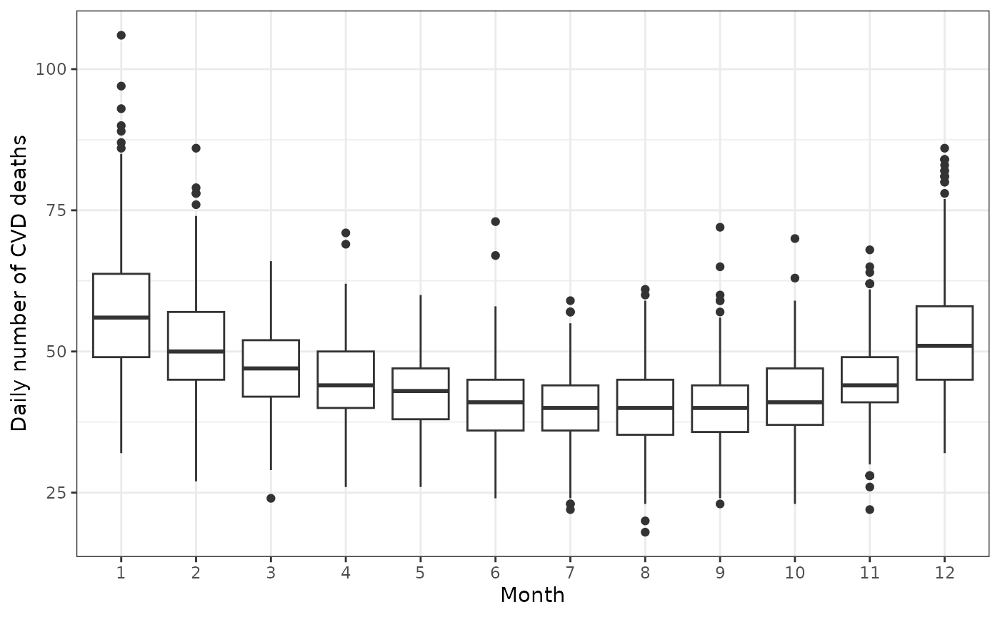
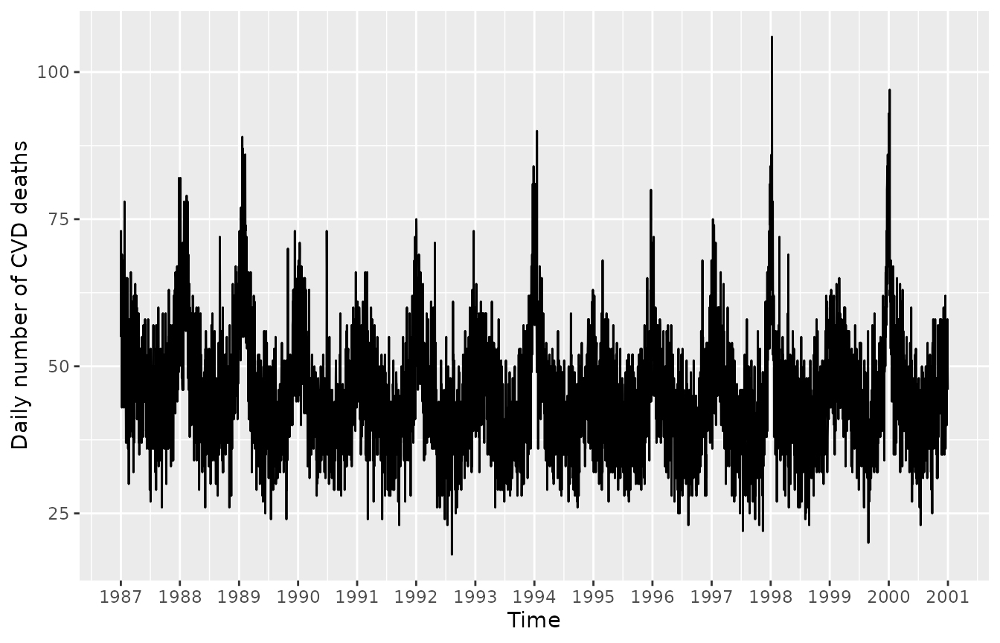
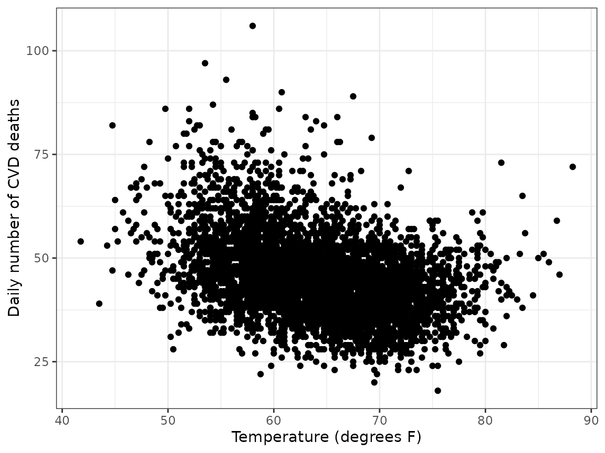
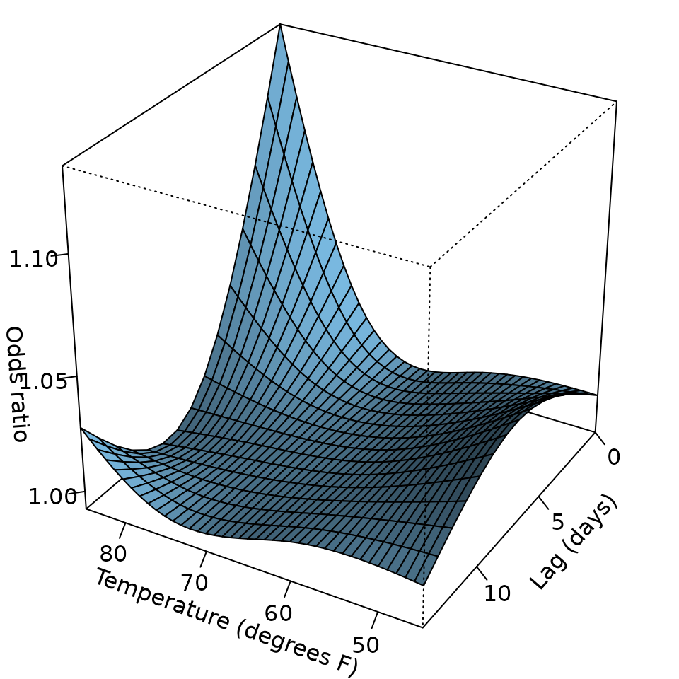
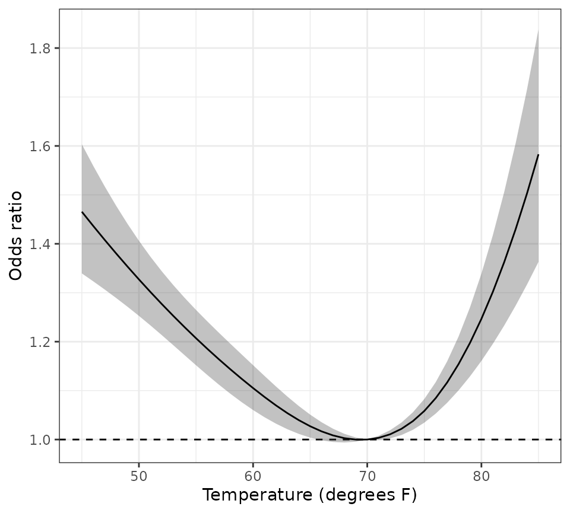
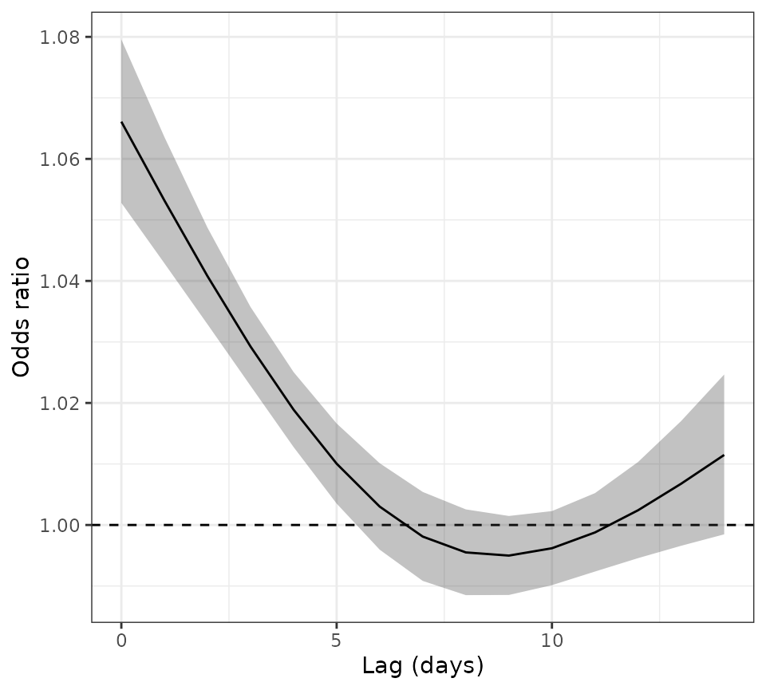
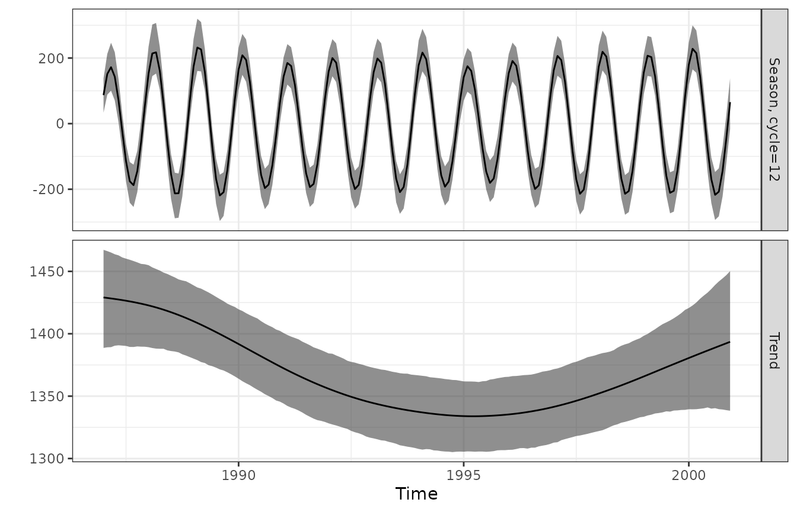
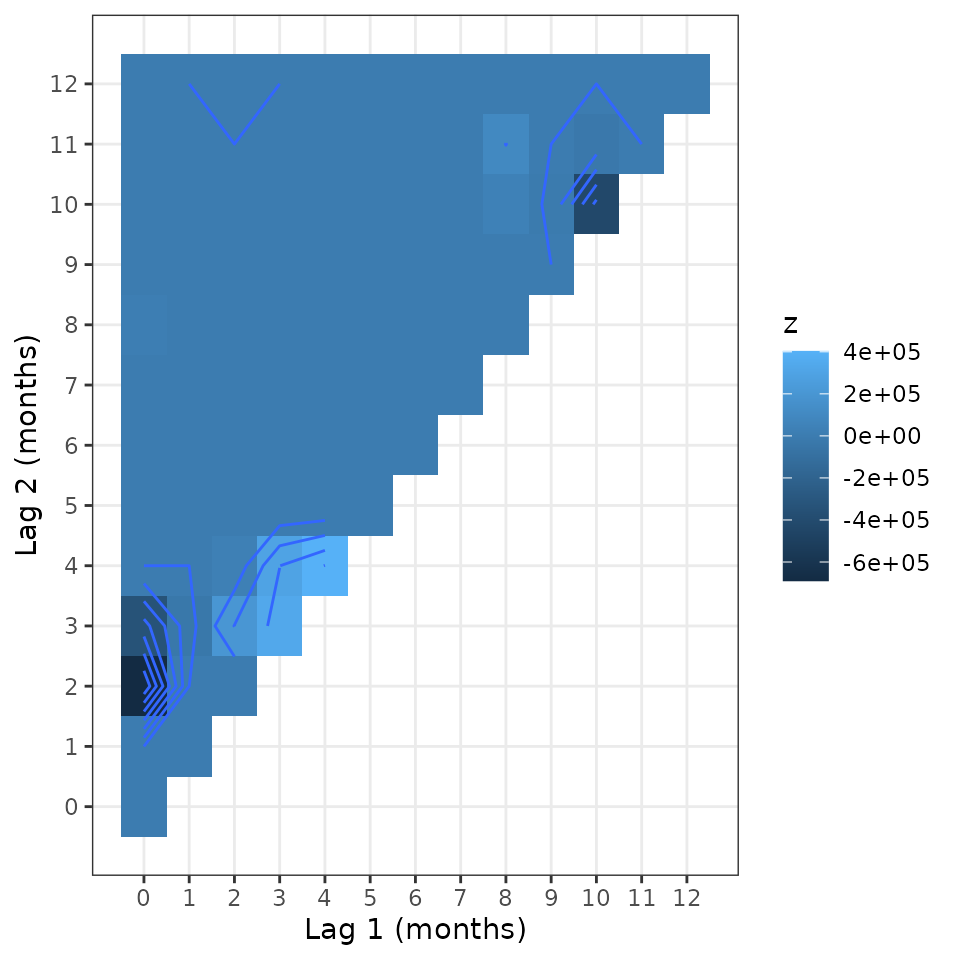

season is a package to analyse seasonal data that I
developed whilst working on studies in environmental epidemiology. Here
I describe some of the key functions.
Seasonal death data
We will use the data on the daily number of deaths from
cardiovascular disease (CVD) in people aged 75 and over in Los Angeles
for the years 1987 to 2000. Below we load the data and then use
ggplot2 to draw a boxplot of the daily death counts by
month.
data(CVDdaily)
ggplot(
data = CVDdaily,
aes(
x = factor(month),
y = cvd
)
) +
geom_boxplot() +
labs(
x = "Month",
y = "Daily number of CVD deaths"
) +
theme_bw()
There is a clear seasonal pattern, with more deaths in the winter months and fewer in the summer. There’s also evidence of a greater variance in the winter months, which we would expect in a count process, as the variance is proportional to the mean.
Plot of deaths over time
It is also useful to plot the data over time as below. To help show the seasonal pattern, we create a vertical reference line for the first day of each year. The plot shows the seasonal peak happened in every winter, although the size of the peak varied between years.
years <- 1987:2001
Januarys <- paste0(years, "-01-01") |>
as.Date(origin = "1970-01-01") |>
as.numeric()
ggplot(
CVDdaily,
aes(
x = as.numeric(date),
y = cvd
)
) +
geom_line() +
scale_x_continuous(
breaks = Januarys,
labels = years
) +
labs(
x = "Time",
y = "Daily number of CVD deaths"
)
theme_bw() +
theme(panel.grid.minor = element_blank())
#> <theme> List of 144
#> $ line : <ggplot2::element_line>
#> ..@ colour : chr "black"
#> ..@ linewidth : num 0.5
#> ..@ linetype : num 1
#> ..@ lineend : chr "butt"
#> ..@ linejoin : chr "round"
#> ..@ arrow : logi FALSE
#> ..@ arrow.fill : chr "black"
#> ..@ inherit.blank: logi TRUE
#> $ rect : <ggplot2::element_rect>
#> ..@ fill : chr "white"
#> ..@ colour : chr "black"
#> ..@ linewidth : num 0.5
#> ..@ linetype : num 1
#> ..@ linejoin : chr "round"
#> ..@ inherit.blank: logi TRUE
#> $ text : <ggplot2::element_text>
#> ..@ family : chr ""
#> ..@ face : chr "plain"
#> ..@ italic : chr NA
#> ..@ fontweight : num NA
#> ..@ fontwidth : num NA
#> ..@ colour : chr "black"
#> ..@ size : num 11
#> ..@ hjust : num 0.5
#> ..@ vjust : num 0.5
#> ..@ angle : num 0
#> ..@ lineheight : num 0.9
#> ..@ margin : <ggplot2::margin> num [1:4] 0 0 0 0
#> ..@ debug : logi FALSE
#> ..@ inherit.blank: logi TRUE
#> $ title : <ggplot2::element_text>
#> ..@ family : NULL
#> ..@ face : NULL
#> ..@ italic : chr NA
#> ..@ fontweight : num NA
#> ..@ fontwidth : num NA
#> ..@ colour : NULL
#> ..@ size : NULL
#> ..@ hjust : NULL
#> ..@ vjust : NULL
#> ..@ angle : NULL
#> ..@ lineheight : NULL
#> ..@ margin : NULL
#> ..@ debug : NULL
#> ..@ inherit.blank: logi TRUE
#> $ point : <ggplot2::element_point>
#> ..@ colour : chr "black"
#> ..@ shape : num 19
#> ..@ size : num 1.5
#> ..@ fill : chr "white"
#> ..@ stroke : num 0.5
#> ..@ inherit.blank: logi TRUE
#> $ polygon : <ggplot2::element_polygon>
#> ..@ fill : chr "white"
#> ..@ colour : chr "black"
#> ..@ linewidth : num 0.5
#> ..@ linetype : num 1
#> ..@ linejoin : chr "round"
#> ..@ inherit.blank: logi TRUE
#> $ geom : <ggplot2::element_geom>
#> ..@ ink : chr "black"
#> ..@ paper : chr "white"
#> ..@ accent : chr "#3366FF"
#> ..@ linewidth : num 0.5
#> ..@ borderwidth: num 0.5
#> ..@ linetype : int 1
#> ..@ bordertype : int 1
#> ..@ family : chr ""
#> ..@ fontsize : num 3.87
#> ..@ pointsize : num 1.5
#> ..@ pointshape : num 19
#> ..@ colour : NULL
#> ..@ fill : NULL
#> $ spacing : 'simpleUnit' num 5.5points
#> ..- attr(*, "unit")= int 8
#> $ margins : <ggplot2::margin> num [1:4] 5.5 5.5 5.5 5.5
#> $ aspect.ratio : NULL
#> $ axis.title : NULL
#> $ axis.title.x : <ggplot2::element_text>
#> ..@ family : NULL
#> ..@ face : NULL
#> ..@ italic : chr NA
#> ..@ fontweight : num NA
#> ..@ fontwidth : num NA
#> ..@ colour : NULL
#> ..@ size : NULL
#> ..@ hjust : NULL
#> ..@ vjust : num 1
#> ..@ angle : NULL
#> ..@ lineheight : NULL
#> ..@ margin : <ggplot2::margin> num [1:4] 2.75 0 0 0
#> ..@ debug : NULL
#> ..@ inherit.blank: logi TRUE
#> $ axis.title.x.top : <ggplot2::element_text>
#> ..@ family : NULL
#> ..@ face : NULL
#> ..@ italic : chr NA
#> ..@ fontweight : num NA
#> ..@ fontwidth : num NA
#> ..@ colour : NULL
#> ..@ size : NULL
#> ..@ hjust : NULL
#> ..@ vjust : num 0
#> ..@ angle : NULL
#> ..@ lineheight : NULL
#> ..@ margin : <ggplot2::margin> num [1:4] 0 0 2.75 0
#> ..@ debug : NULL
#> ..@ inherit.blank: logi TRUE
#> $ axis.title.x.bottom : NULL
#> $ axis.title.y : <ggplot2::element_text>
#> ..@ family : NULL
#> ..@ face : NULL
#> ..@ italic : chr NA
#> ..@ fontweight : num NA
#> ..@ fontwidth : num NA
#> ..@ colour : NULL
#> ..@ size : NULL
#> ..@ hjust : NULL
#> ..@ vjust : num 1
#> ..@ angle : num 90
#> ..@ lineheight : NULL
#> ..@ margin : <ggplot2::margin> num [1:4] 0 2.75 0 0
#> ..@ debug : NULL
#> ..@ inherit.blank: logi TRUE
#> $ axis.title.y.left : NULL
#> $ axis.title.y.right : <ggplot2::element_text>
#> ..@ family : NULL
#> ..@ face : NULL
#> ..@ italic : chr NA
#> ..@ fontweight : num NA
#> ..@ fontwidth : num NA
#> ..@ colour : NULL
#> ..@ size : NULL
#> ..@ hjust : NULL
#> ..@ vjust : num 1
#> ..@ angle : num -90
#> ..@ lineheight : NULL
#> ..@ margin : <ggplot2::margin> num [1:4] 0 0 0 2.75
#> ..@ debug : NULL
#> ..@ inherit.blank: logi TRUE
#> $ axis.text : <ggplot2::element_text>
#> ..@ family : NULL
#> ..@ face : NULL
#> ..@ italic : chr NA
#> ..@ fontweight : num NA
#> ..@ fontwidth : num NA
#> ..@ colour : chr "#4D4D4DFF"
#> ..@ size : 'rel' num 0.8
#> ..@ hjust : NULL
#> ..@ vjust : NULL
#> ..@ angle : NULL
#> ..@ lineheight : NULL
#> ..@ margin : NULL
#> ..@ debug : NULL
#> ..@ inherit.blank: logi TRUE
#> $ axis.text.x : <ggplot2::element_text>
#> ..@ family : NULL
#> ..@ face : NULL
#> ..@ italic : chr NA
#> ..@ fontweight : num NA
#> ..@ fontwidth : num NA
#> ..@ colour : NULL
#> ..@ size : NULL
#> ..@ hjust : NULL
#> ..@ vjust : num 1
#> ..@ angle : NULL
#> ..@ lineheight : NULL
#> ..@ margin : <ggplot2::margin> num [1:4] 2.2 0 0 0
#> ..@ debug : NULL
#> ..@ inherit.blank: logi TRUE
#> $ axis.text.x.top : <ggplot2::element_text>
#> ..@ family : NULL
#> ..@ face : NULL
#> ..@ italic : chr NA
#> ..@ fontweight : num NA
#> ..@ fontwidth : num NA
#> ..@ colour : NULL
#> ..@ size : NULL
#> ..@ hjust : NULL
#> ..@ vjust : num 0
#> ..@ angle : NULL
#> ..@ lineheight : NULL
#> ..@ margin : <ggplot2::margin> num [1:4] 0 0 2.2 0
#> ..@ debug : NULL
#> ..@ inherit.blank: logi TRUE
#> $ axis.text.x.bottom : NULL
#> $ axis.text.y : <ggplot2::element_text>
#> ..@ family : NULL
#> ..@ face : NULL
#> ..@ italic : chr NA
#> ..@ fontweight : num NA
#> ..@ fontwidth : num NA
#> ..@ colour : NULL
#> ..@ size : NULL
#> ..@ hjust : num 1
#> ..@ vjust : NULL
#> ..@ angle : NULL
#> ..@ lineheight : NULL
#> ..@ margin : <ggplot2::margin> num [1:4] 0 2.2 0 0
#> ..@ debug : NULL
#> ..@ inherit.blank: logi TRUE
#> $ axis.text.y.left : NULL
#> $ axis.text.y.right : <ggplot2::element_text>
#> ..@ family : NULL
#> ..@ face : NULL
#> ..@ italic : chr NA
#> ..@ fontweight : num NA
#> ..@ fontwidth : num NA
#> ..@ colour : NULL
#> ..@ size : NULL
#> ..@ hjust : num 0
#> ..@ vjust : NULL
#> ..@ angle : NULL
#> ..@ lineheight : NULL
#> ..@ margin : <ggplot2::margin> num [1:4] 0 0 0 2.2
#> ..@ debug : NULL
#> ..@ inherit.blank: logi TRUE
#> $ axis.text.theta : NULL
#> $ axis.text.r : <ggplot2::element_text>
#> ..@ family : NULL
#> ..@ face : NULL
#> ..@ italic : chr NA
#> ..@ fontweight : num NA
#> ..@ fontwidth : num NA
#> ..@ colour : NULL
#> ..@ size : NULL
#> ..@ hjust : num 0.5
#> ..@ vjust : NULL
#> ..@ angle : NULL
#> ..@ lineheight : NULL
#> ..@ margin : <ggplot2::margin> num [1:4] 0 2.2 0 2.2
#> ..@ debug : NULL
#> ..@ inherit.blank: logi TRUE
#> $ axis.ticks : <ggplot2::element_line>
#> ..@ colour : chr "#333333FF"
#> ..@ linewidth : NULL
#> ..@ linetype : NULL
#> ..@ lineend : NULL
#> ..@ linejoin : NULL
#> ..@ arrow : logi FALSE
#> ..@ arrow.fill : chr "#333333FF"
#> ..@ inherit.blank: logi TRUE
#> $ axis.ticks.x : NULL
#> $ axis.ticks.x.top : NULL
#> $ axis.ticks.x.bottom : NULL
#> $ axis.ticks.y : NULL
#> $ axis.ticks.y.left : NULL
#> $ axis.ticks.y.right : NULL
#> $ axis.ticks.theta : NULL
#> $ axis.ticks.r : NULL
#> $ axis.minor.ticks.x.top : NULL
#> $ axis.minor.ticks.x.bottom : NULL
#> $ axis.minor.ticks.y.left : NULL
#> $ axis.minor.ticks.y.right : NULL
#> $ axis.minor.ticks.theta : NULL
#> $ axis.minor.ticks.r : NULL
#> $ axis.ticks.length : 'rel' num 0.5
#> $ axis.ticks.length.x : NULL
#> $ axis.ticks.length.x.top : NULL
#> $ axis.ticks.length.x.bottom : NULL
#> $ axis.ticks.length.y : NULL
#> $ axis.ticks.length.y.left : NULL
#> $ axis.ticks.length.y.right : NULL
#> $ axis.ticks.length.theta : NULL
#> $ axis.ticks.length.r : NULL
#> $ axis.minor.ticks.length : 'rel' num 0.75
#> $ axis.minor.ticks.length.x : NULL
#> $ axis.minor.ticks.length.x.top : NULL
#> $ axis.minor.ticks.length.x.bottom: NULL
#> $ axis.minor.ticks.length.y : NULL
#> $ axis.minor.ticks.length.y.left : NULL
#> $ axis.minor.ticks.length.y.right : NULL
#> $ axis.minor.ticks.length.theta : NULL
#> $ axis.minor.ticks.length.r : NULL
#> $ axis.line : <ggplot2::element_blank>
#> $ axis.line.x : NULL
#> $ axis.line.x.top : NULL
#> $ axis.line.x.bottom : NULL
#> $ axis.line.y : NULL
#> $ axis.line.y.left : NULL
#> $ axis.line.y.right : NULL
#> $ axis.line.theta : NULL
#> $ axis.line.r : NULL
#> $ legend.background : <ggplot2::element_rect>
#> ..@ fill : NULL
#> ..@ colour : logi NA
#> ..@ linewidth : NULL
#> ..@ linetype : NULL
#> ..@ linejoin : NULL
#> ..@ inherit.blank: logi TRUE
#> $ legend.margin : NULL
#> $ legend.spacing : 'rel' num 2
#> $ legend.spacing.x : NULL
#> $ legend.spacing.y : NULL
#> $ legend.key : NULL
#> $ legend.key.size : 'simpleUnit' num 1.2lines
#> ..- attr(*, "unit")= int 3
#> $ legend.key.height : NULL
#> $ legend.key.width : NULL
#> $ legend.key.spacing : NULL
#> $ legend.key.spacing.x : NULL
#> $ legend.key.spacing.y : NULL
#> $ legend.key.justification : NULL
#> $ legend.frame : NULL
#> $ legend.ticks : NULL
#> $ legend.ticks.length : 'rel' num 0.2
#> $ legend.axis.line : NULL
#> $ legend.text : <ggplot2::element_text>
#> ..@ family : NULL
#> ..@ face : NULL
#> ..@ italic : chr NA
#> ..@ fontweight : num NA
#> ..@ fontwidth : num NA
#> ..@ colour : NULL
#> ..@ size : 'rel' num 0.8
#> ..@ hjust : NULL
#> ..@ vjust : NULL
#> ..@ angle : NULL
#> ..@ lineheight : NULL
#> ..@ margin : NULL
#> ..@ debug : NULL
#> ..@ inherit.blank: logi TRUE
#> $ legend.text.position : NULL
#> $ legend.title : <ggplot2::element_text>
#> ..@ family : NULL
#> ..@ face : NULL
#> ..@ italic : chr NA
#> ..@ fontweight : num NA
#> ..@ fontwidth : num NA
#> ..@ colour : NULL
#> ..@ size : NULL
#> ..@ hjust : num 0
#> ..@ vjust : NULL
#> ..@ angle : NULL
#> ..@ lineheight : NULL
#> ..@ margin : NULL
#> ..@ debug : NULL
#> ..@ inherit.blank: logi TRUE
#> $ legend.title.position : NULL
#> $ legend.position : chr "right"
#> $ legend.position.inside : NULL
#> $ legend.direction : NULL
#> $ legend.byrow : NULL
#> $ legend.justification : chr "center"
#> $ legend.justification.top : NULL
#> $ legend.justification.bottom : NULL
#> $ legend.justification.left : NULL
#> $ legend.justification.right : NULL
#> $ legend.justification.inside : NULL
#> [list output truncated]
#> @ complete: logi TRUE
#> @ validate: logi TRUEDaily deaths and temperatures plot
Deaths increase in many countries around the world when the temperature is outside an optimal range, with the optimal range varying by climate. The plot below shows daily death counts against daily temperatures. Increases in deaths are apparent at both low and high temperatures, suggesting a non-linear association between temperature and cardiovascular deaths.
ggplot(
CVDdaily,
aes(
x = tmpd,
y = cvd
)
) +
geom_point() +
labs(
x = "Temperature (degrees F)",
y = "Daily number of CVD deaths"
) +
theme_bw()
Regression model
We now examine the association between temperature and death using a case-crossover model. This model compares the number of deaths on case and control days, and only uses controls that are near the case day. By choosing control days near case days, the model controls for long-term trends and seasonal patterns. Below we use the default of cases and controls selected from the same 28 day (4 week) windows. The model is fitted using conditional logistic regression. The technical details are in our book Analysing Seasonal Health Data.
To model a non-linear effect for temperature, we first create a spline for temperature with knots at 60 and 75 degrees Fahrenheit, which essentially means we expect a change in the association around these temperatures.
Deaths due to temperature can occur days after exposure. For example,
when a person has a heart attack on a hot day, is admitted to hospital
alive, but dies in hospital some days later. To account for this we
include a lag of 14 days. By using a lagged temperature we lose a few
observations at the start of the data, because we do not have
temperature data from the year 1986. We use the
[dlnm](https://cran.r-project.org/web/packages/dlnm/index.html)
library to create the non-linear and lagged spline basis.
We include a categorical variable of day of the week, because there is evidence that deaths vary by day of the week.
The model takes a short while to run.
# make a spline basis that has a lag and is non-linear
tmpd.basis <- crossbasis(
CVDdaily$tmpd,
# 14 day lag
lag = 14,
# 3 degrees of freedom for lag; ns = natural spline
arglag = list(fun = "ns", df = 3),
# knots at 65 and 75 degrees
argvar = list(fun = "ns", knots = c(60, 75))
)
# add the spline basis variables to the data
CVDdaily <- cbind(CVDdaily, tmpd.basis[seq_len(nrow(CVDdaily)), ])
# create the regression formula
spline.names <- colnames(tmpd.basis)
formula <- paste(
"cvd ~",
paste(spline.names, collapse = " + "),
"+ Mon + Tue + Wed + Thu + Fri + Sat"
)
model <- casecross(stats::as.formula(formula), data = CVDdaily)
summary(model)
#> Time-stratified case-crossover with a stratum length of 28 days
#> Total number of cases 229759
#> Number of case days with available control days 5098
#> Average number of control days per case day 23.2
#>
#> Parameter Estimates:
#> coef exp(coef) se(coef) z Pr(>|z|)
#> v1.l1 -0.020874306 0.9793421 0.011889922 -1.7556303 7.915156e-02
#> v1.l2 -0.066362396 0.9357917 0.008656561 -7.6661383 1.772520e-14
#> v1.l3 0.002178049 1.0021804 0.008944090 0.2435182 8.076040e-01
#> v2.l1 -0.191012092 0.8261226 0.038352025 -4.9804957 6.342163e-07
#> v2.l2 0.014749261 1.0148586 0.029740115 0.4959383 6.199380e-01
#> v2.l3 -0.014302130 0.9857997 0.029749686 -0.4807490 6.306949e-01
#> v3.l1 -0.150126292 0.8605993 0.023333994 -6.4338019 1.244511e-10
#> v3.l2 0.117420420 1.1245921 0.017741751 6.6183107 3.633268e-11
#> v3.l3 -0.058042887 0.9436095 0.018876807 -3.0748254 2.106258e-03
#> Mon 0.036431253 1.0371030 0.007820245 4.6585818 3.183953e-06
#> Tue 0.018269159 1.0184371 0.007841133 2.3299131 1.981074e-02
#> Wed -0.011365776 0.9886986 0.007868064 -1.4445454 1.485856e-01
#> Thu -0.008998068 0.9910423 0.007856868 -1.1452488 2.521061e-01
#> Fri 0.009599729 1.0096460 0.007855806 1.2219916 2.217108e-01
#> Sat 0.014931771 1.0150438 0.007861585 1.8993336 5.752063e-02This is a large study with just under 230,000 deaths and over 5,000 case days. The coefficients are the log odds ratios. Here and elsewhere in this vignette, the estimates are quoted to many decimal places, but when presented in a paper we recommend using these guidelines.
We can see there are more deaths on Monday compared with the reference day of Sunday. The temperature estimates are hard to interpret and are best shown by reconstructing the nine spline estimates in a plot.
Confidence intervals
The display above does not give confidence intervals for the log odds ratios, but these can easily be created as follows (which gives 95% confidence intervals).
confint(model$cox_model)
#> 2.5 % 97.5 %
#> v1.l1 -0.0441781242 0.002429512
#> v1.l2 -0.0833289446 -0.049395848
#> v1.l3 -0.0153520450 0.019708143
#> v2.l1 -0.2661806785 -0.115843505
#> v2.l2 -0.0435402932 0.073038815
#> v2.l3 -0.0726104439 0.044006183
#> v3.l1 -0.1958600798 -0.104392505
#> v3.l2 0.0826472273 0.152193613
#> v3.l3 -0.0950407498 -0.021045024
#> Mon 0.0211038533 0.051758652
#> Tue 0.0029008204 0.033637498
#> Wed -0.0267868986 0.004055347
#> Thu -0.0243972457 0.006401110
#> Fri -0.0057973676 0.024996826
#> Sat -0.0004766513 0.030340194Plot of the non-linear association between temperature and death
We use the coefficients and their variance–covariance matrix to reconstruct a three-dimensional plot by lag and temperature. We examine temperatures over the range 45 to 85 degrees Fahrenheit. The estimates are centred using a reference temperature of 70 degrees.
# extract the coefficients and variance--covariance matrix for the spline terms
coef <- coefficients(model$cox_model)
index <- names(coef) %in% spline.names
coef <- coef[index]
vcov <- vcov(model$cox_model)[index, index]
for.plot <- crosspred(
basis = tmpd.basis,
coef = coef,
vcov = vcov,
at = seq(45, 85, 1),
model.link = "log",
cen = 70
)
par(mai = c(0.2, 0, 0, 0)) # reduce plot margins
plot(
for.plot,
xlab = "Temperature (degrees F)",
zlab = "Odds ratio",
ylab = "Lag (days)"
)
The dominant feature is a large spike in deaths at high temperatures on the same day of exposure (lag day zero).
Plot of the temperature and death association averaging over all lags
Another useful plot is the overall change in risk which summarises
the results across all lags. The plot shows the mean odds (solid line)
and 95% confidence interval (shaded area). We first put the estimates
into a data.frame so they can be used in
ggplot2.
to.plot <- data.frame(
temperature = for.plot$predvar,
mean = for.plot$allRRfit,
lower = for.plot$allRRlow,
upper = for.plot$allRRhigh
)
ggplot(
data = to.plot,
aes(
x = temperature,
y = mean,
ymin = lower,
ymax = upper
)
) +
geom_hline(
lty = 2,
yintercept = 1
) + # horizontal reference line at no change in odds
geom_ribbon(alpha = 0.3) +
geom_line() +
labs(
x = "Temperature (degrees F)",
y = "Odds ratio"
) +
theme_bw()
Plot of the lagged temperature and death association for a specific temperature
We can also take a “slice” of the 3D plot to show the association on each lagged day. The plot shows the mean odds (solid line) and 95% confidence interval (shaded area).
for.plot <- crosspred(
basis = tmpd.basis,
coef = coef,
vcov = vcov,
at = 80,
lag = c(0, 14),
model.link = "log",
cen = 70
)
to.plot <- data.frame(
lag = for.plot$lag[1]:for.plot$lag[2],
mean = as.numeric(for.plot$matRRfit),
lower = as.numeric(for.plot$matRRlow),
upper = as.numeric(for.plot$matRRhigh)
)
ggplot(
data = to.plot,
aes(
x = lag,
y = mean,
ymin = lower,
ymax = upper
)
) +
geom_hline(
lty = 2,
yintercept = 1
) + # horizontal reference line at no change in odds
geom_ribbon(alpha = 0.3) +
geom_line() +
labs(
x = "Lag (days)",
y = "Odds ratio"
) +
theme_bw()
The plot shows that the estimated risk is highest on the day of exposure and generally declines with increasing lag.
Non-stationary seasonal patterns
As shown in the second plot in this vignette, the seasonal pattern appeared to vary from year-to-year, with larger peaks in some years. This is a non-stationary seasonal pattern. We can model this pattern by splitting the time series into a trend, seasonal pattern(s) and residuals. Details on the method are available in this paper: Estimating trends and seasonality in coronary heart disease.
We use the monthly data rather than the daily data because we are
primarily interested in seasonal patterns, and the daily data will take
much longer to run. We use the response variable of adj as
this is the adjusted monthly counts of CVD deaths which accounts for the
differences in month lengths (e.g., 28 or 29 days in February and 31 in
January).
This model takes a few minutes to run because it uses Markov chain Monte Carlo samples to estimate the model parameters.
set.seed(1234) # set the random seed to give repeatable results
f <- 12 # a single twelve month cycle
tau <- c(10, 50) # achieved via trial-and-error; small tau -> less variability
ns.season <- nscosinor(
data = CVD,
response = "adj",
cycles = f,
niters = 2000,
burnin = 500,
tau = tau,
div = 1000
)
#> Iteration number 1000 of 2000 Iteration number 2000 of 2000
summary(ns.season)
#> Statistics for non-stationary cosinor based on MCMC chains
#> Number of MCMC samples = 1501
#>
#> Standard deviations
#> Residual, mean=113.402, 95% CI [100.492, 127.221]
#> Cycle=12
#> Season, mean=0.157644, 95% CI [0.0446635, 0.319579]
#>
#> Phase and amplitude
#> Cycle=12
#> Amplitude, mean=205.995, 95% CI [180.267, 233.145]
#> Phase (radians), mean=0.69756, 95% CI [0.579905, 0.829052]
plot(ns.season)
The estimated mean amplitude is 207, so on average there 207 extra deaths per month in the seasonal winter peak compared with the year-round average. The 95% confidence interval for the peak is from 182 to 232 monthly deaths.
The plot shows the long-term non-linear trend and non-stationary seasonal pattern. The seasonal peaks are higher in some years, including 1989 and 2000, which matches the above plot of the data.
Back transforming the phase
The phase, or timing of the seasonal peak, in the results above is given in radians (on a scale of 0 to 2). We can transform this to a more useful time scale by transforming the summary statistics.
cat(
"Mean phase = ",
round(invyrfraction(0.6952055 / (2 * pi), type = "monthly", text = FALSE), 2),
" months.\n",
sep = ""
)
#> Mean phase = 2.33 months.
cat(
"Lower 95% interval = ",
round(invyrfraction(0.5732958 / (2 * pi), type = "monthly", text = FALSE), 2),
" months.\n",
sep = ""
)
#> Lower 95% interval = 2.09 months.
cat(
"Upper 95% interval = ",
round(invyrfraction(0.8216251 / (2 * pi), type = "monthly", text = FALSE), 2),
" months.\n",
sep = ""
)
#> Upper 95% interval = 2.57 months.The estimated peak in deaths is in early February.
Testing for non-linearity in time series
Another useful function is a test of non-linearity in time series using the third-order moment. This is the non-linear extension of the more familiar second-order tests of linearity, such as the autocorrelation function. Here we check for any remaining non-linearity in the time series of residuals from the non-stationary model of the seasonal pattern in monthly CVD deaths. We check up to a lag of 12 months.
set.seed(1234) # set the random seed to give repeatable results
ntest.residuals <- nonlintest(
ns.season$residuals,
n.lag = 12,
n.boot = 500
)
ntest.residuals
#> Largest and smallest co-ordinates of the third-order moment outside the test limits
#> Largest positive difference at lags:
#> 4 4
#> Size of largest largest difference:
#> 402602.8
#> Largest negative difference at lags:
#> 0 2
#> Size of largest negative difference:
#> -689838.6
#>
#> Bootstrap test of non-linearity using the third-order moment
#> Statistics for areas outside test limits:
#> observed obs/SD median-null 95%-null p-value
#> 2961568 7.056636 283627.3 1253176 0There is evidence of remaining non-linearity in the residuals at lags of 2 to 4 months.
plot <- plot(
ntest.residuals,
plot = FALSE
)
#> Warning: `plot.nonlintest()` was deprecated in season 0.3.17.
#> Use `autoplot()` for a ggplot object you can extend:
#> ℹ autoplot(x) + ggplot2::theme_bw()
#> This warning is displayed once per session.
#> Call `lifecycle::last_lifecycle_warnings()` to see where this warning was
#> generated.
#> Warning: The `plot` argument of `plot.nonlintest()` is deprecated as of season 0.3.17.
#> ℹ Assign the return value of `autoplot(x)` instead.
#> This warning is displayed once per session.
#> Call `lifecycle::last_lifecycle_warnings()` to see where this warning was
#> generated.
plot +
scale_x_continuous(breaks = 0:12) +
scale_y_continuous(breaks = 0:12) +
theme_bw() +
labs(
x = "Lag 1 (months)",
y = "Lag 2 (months)"
) +
theme(panel.grid.minor = element_blank())
The plot of the third order moment shows the lags with the strongest non-linear interactions at (0,2), (4,4) and (10,10).